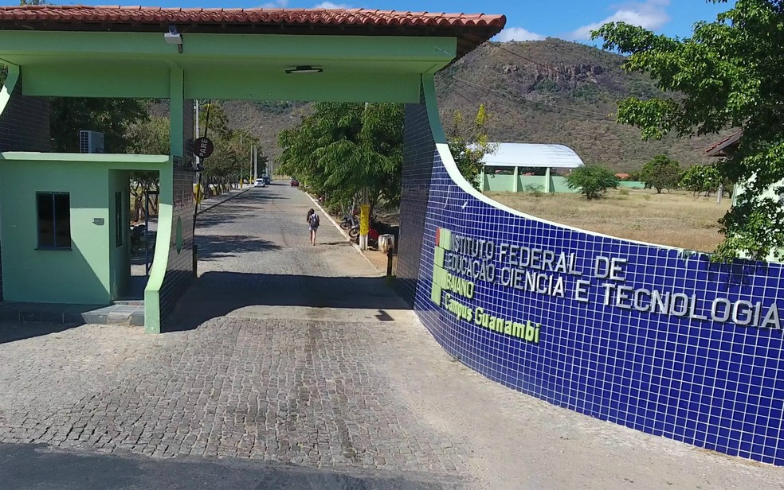
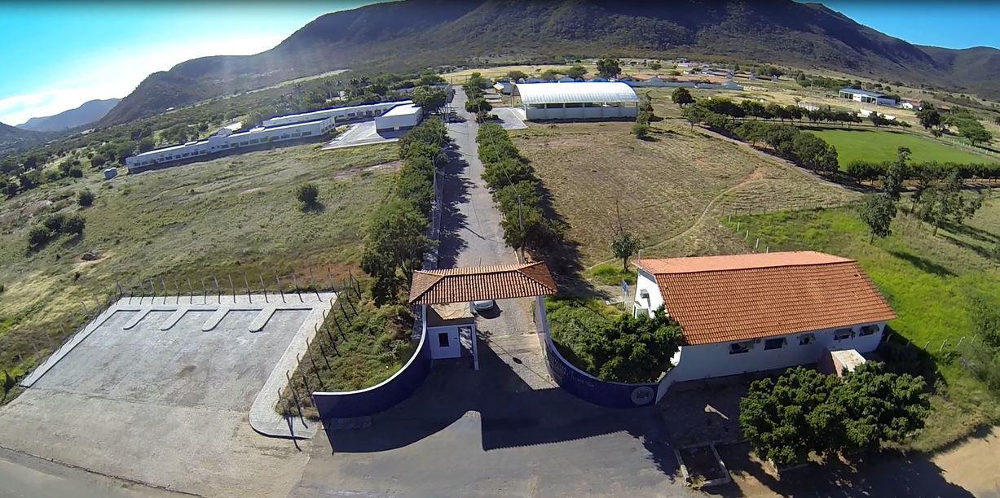
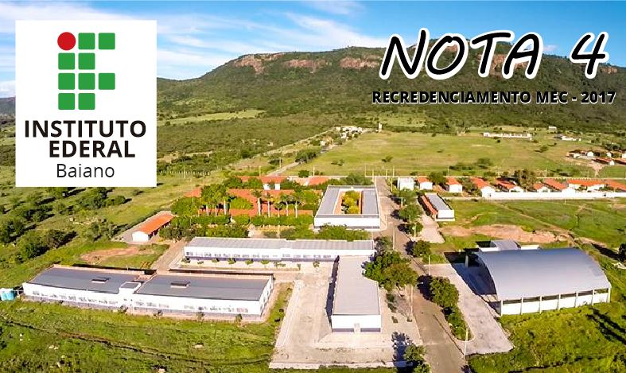
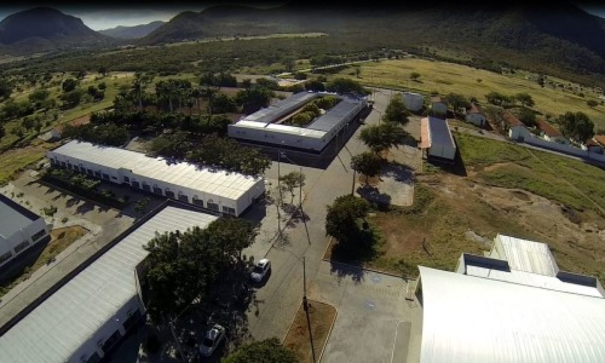
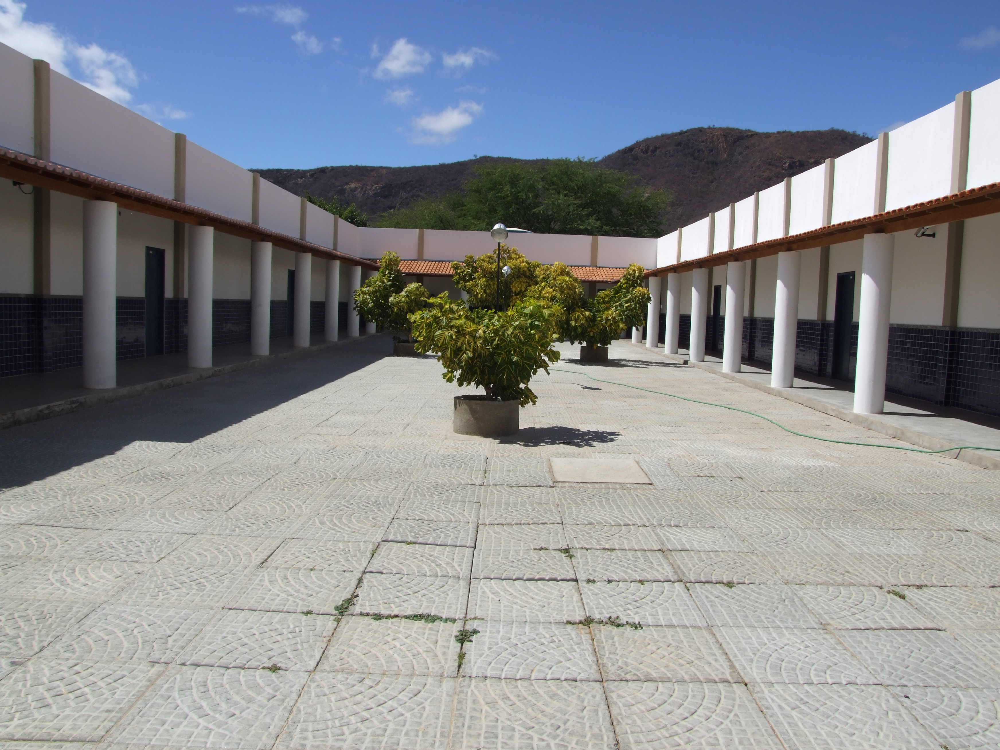
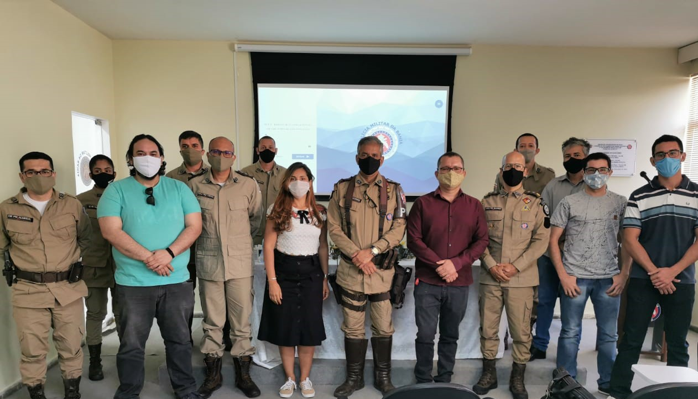

 Portaria IF baiano - Campus Guanambi
 Vista Aérea Portaria IF Baiano - Campus Guanambi
 Recredenciamento MEC 2017
 Vista aérea pavilhões.
 Pavilhão ensino medio.
 Projeto dos Alunos de ADS para o batalhão.